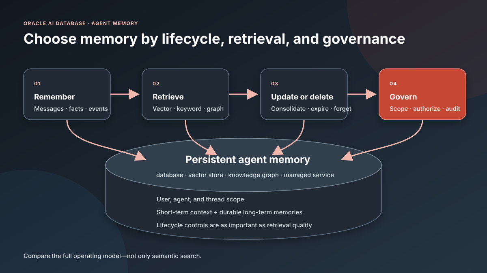

Oracle AI Database · Agent memory · Technical comparison
Top AI Agent Memory Platforms in 2026—and How Oracle AI Agent Memory Compares
A practical matrix for comparing persistent memory, retrieval, storage choices, client languages, lifecycle controls, and enterprise governance.
Which AI agent memory platform should you use? The answer depends less on whether a product can perform semantic search and more on where memory is stored, how it is scoped, whether facts can be corrected or deleted, which client languages are supported, and how the memory layer fits your governance model.
This article compares five commonly evaluated agent-memory choices—Mem0, Zep, Letta, LangMem with LangGraph, and Amazon Bedrock AgentCore Memory—with Oracle AI Agent Memory and its oracleagentmemory library. “Top five” here means representative, widely documented options with active developer ecosystems and distinct architectures; it is not a market-share ranking, for which no independently verified six-product order is publicly available. The closest reproducible public-adoption proxy is GitHub stars, which is the following:
- Mem0 OSS—approximately 61,900 stars
- Zep Graphiti—approximately 29,300 stars
- Letta—approximately 24,000 stars
- LangMem—approximately 1,600 stars
Amazon Bedrock AgentCore Memory and Oracle AI Agent Memory do not expose directly comparable product repositories, so they cannot be placed in that proxy ranking. Stars indicate developer interest—not revenue, production deployments, or market share. Counts were checked on July 28, 2026; product capabilities will continue to evolve.

Key Takeaways
- Mem0, Zep, Letta, LangMem, and AgentCore address different layers: memory service, temporal graph, stateful-agent platform, framework utilities, and managed cloud infrastructure.
- Open-source availability does not automatically mean the managed service or its storage engine is open source; several products use a mixed model.
- All six choices can evolve stored memory, but “continual learning” here does not mean automatically retraining the foundation model.
- Oracle AI Agent Memory keeps short- and long-term memory on Oracle AI Database and adds explicit scope, hybrid retrieval, lifecycle management, and a dual-licensed library.
Agent Memory Platform Comparison Matrix
The matrix uses the product's documented production path. Where a project has both open-source and managed editions, the distinction is stated explicitly.
How this article uses “continual learning”: the system extracts, adds, consolidates, corrects, invalidates, or retrieves memory as interactions accumulate. It may also refine prompts or agent state. This is inference-time adaptation through external state—not automatic training of the underlying foundation model's weights.
| Company | Product | Is open source? | Database supported | Client languages supported | Oracle Database backend possible? | Continual learning | Strengths | Limitations | Short description of main features/characteristics |
|---|---|---|---|---|---|---|---|---|---|
| Mem0 | Mem0 Platform and Mem0 OSS | Mixed. Mem0 OSS is Apache 2.0; Platform is managed. | Many vector stores, including Qdrant, pgvector, Redis/Valkey, MongoDB, OpenSearch, Pinecone, Milvus, and Weaviate. | Python, JavaScript/TypeScript, REST, and CLIs. | Custom only. Oracle is not a documented provider; add a Mem0 vector-store adapter for Oracle AI Vector Search. | Yes. Extracts facts and handles conflicts; current Platform preserves linked history. No model-weight training. | Simple API, broad integrations, managed or self-hosted, useful scopes. | OSS/Platform parity varies; model cost and quality matter; ADD-only memory can grow. | General-purpose extraction, search, metadata, and memory CRUD. |
| Zep AI | Zep and Graphiti | Mixed. Graphiti is open source; managed Zep is proprietary. | Zep-managed storage; Graphiti supports Neo4j, FalkorDB, and Amazon Neptune. | Zep: Python, JavaScript/TypeScript, Go. Graphiti: primarily Python. | Custom only. Build a Graphiti graph/search driver for Oracle; managed Zep storage is not selectable. | Yes. Incrementally adds facts and invalidates superseded facts while retaining history. | Temporal reasoning, provenance, contradiction handling, hybrid graph retrieval. | Graph complexity; Graphiti needs production tooling; managed Zep is proprietary. | Temporal context graph for current and historical facts. |
| Letta | Letta Cloud and open-source Letta server | Mixed. The Letta server/API is Apache 2.0; Cloud is managed. | PostgreSQL with pgvector when self-hosted; managed in Cloud. |
Python, JavaScript/TypeScript, and REST. | Not natively. Oracle can be an external tool/source; replacing PostgreSQL requires a persistence-layer implementation. | Yes. Agents autonomously edit memory blocks and persistent behavior state. | Complete stateful runtime, persistent identity, shared and always-visible blocks. | Opinionated full platform; self-hosting and autonomous writes require controls. | Stateful agents with editable core and archival memory. |
| LangChain | LangMem, LangGraph stores, and LangGraph Platform | Mixed. LangMem and LangGraph are MIT; Platform is commercial. | Storage-neutral core plus LangGraph BaseStore adapters, including PostgreSQL and Oracle. |
LangMem: Python. LangGraph: Python and JavaScript/TypeScript. | Yes—native. Use OracleStore and OracleSaver from langgraph-oracledb. |
Yes. Extracts, consolidates, updates/deletes memories, and can optimize prompts. | Composable memory types, storage flexibility, background reflection, prompt learning. | Not turnkey; teams own persistence, scheduling, authorization, and operations. | Framework primitives for semantic, episodic, and procedural memory. |
| Amazon Web Services | Amazon Bedrock AgentCore Memory | No. Fully managed AWS service. | AWS-managed; the underlying database is not selectable. | Python/Boto3, AWS service APIs/SDKs, and Node CLI. | Not as its memory store. A self-managed strategy can use Oracle externally, but AgentCore still stores memory records. | Yes. Managed strategies extract, consolidate, summarize, and reflect asynchronously. | Managed scale, AWS security, built-in/custom strategies, actor/session scope. | AWS lock-in; strategies are not retroactive; customization restores operational work. | Managed event history and strategy-based long-term memory. |
| Oracle | Oracle AI Agent Memory 26.6 and oracleagentmemory |
Mixed. The library is dual-licensed under Apache 2.0 or UPL 1.0; Oracle AI Database is commercial. No public product GitHub repository is currently listed. | Oracle AI Database 26ai or later through an application connection or pool. | Oracle Agent Memory libraries/SDKs; availability depends on release. | Yes—native. Oracle AI Database is the memory, vector, keyword, metadata, and governance backend. | Yes. Inline/background extraction, summaries, configurable updates, and re-extraction. | Database-native hybrid retrieval, scope, SQL security, TTL, updates, deletion. | Requires Oracle AI Database 26ai+; teams configure models and policies; background work is best effort. | Governed short- and long-term memory on Oracle AI Database. |
Comparison reviewed against official product documentation in July 2026. Verify current release notes, regional availability, pricing, and license terms before selecting a platform.
How to Read the Matrix
Open source can describe only part of the stack
A project may publish an open-source client or engine while offering a proprietary managed control plane, storage engine, or enterprise governance layer. Decide whether your requirement is source access to the SDK, the complete server, the database layer, or the production service.
“Database supported” changes the operating model
A bring-your-own-store library offers portability but leaves schema design, backup, scaling, consistency, deletion, and security integration to the application team. A managed memory service removes much of that work but can limit storage choice and portability. A database-native memory layer keeps memory close to other enterprise data and policies but standardizes on that database.
Memory is more than vector similarity
Useful memory systems decide what to retain, organize it by user and agent, retrieve it when relevant, correct contradictions, and delete it when it expires or a subject requests removal. Vector search is one retrieval method. Exact identifiers, metadata filters, keyword matching, graph relationships, and temporal validity can be equally important.
What Is Distinctive About Oracle AI Agent Memory?
Oracle AI Agent Memory treats memory as governed database state rather than a disconnected vector sidecar. The oracleagentmemory library persists messages, durable memories, profiles, facts, guidelines, chunks, and thread metadata using Oracle AI Database. Applications explicitly scope retrieval by user, agent, and thread.
Release 26.6 supports vector-only, keyword, and hybrid retrieval. Hybrid retrieval combines semantic and keyword matching with metadata filters, while OracleDBEmbedder can generate embeddings in the database. The same library manages memory extraction, background processing, summaries, context cards, expiration, record updates, and cascading thread deletion.
The architectural tradeoff: Oracle provides the strongest fit when the enterprise already uses Oracle AI Database or wants memory, operational data, security, transactions, vector search, and lifecycle controls in one governed data platform. Teams seeking a database-neutral abstraction or an agent runtime bundled with memory may prefer a different row in the matrix.
How Should You Select an Agent Memory Platform?
- Define the memory types. Separate recent thread context, durable facts, episodic outcomes, procedural guidance, and source-of-truth business data.
- Define scope and authorization. Specify exactly which user, agent, team, tenant, and thread may write or retrieve each memory.
- Test correction and deletion. Measure how the product handles contradictions, expiration, user deletion, thread cleanup, and derived records.
- Evaluate retrieval. Test vector, keyword, metadata, graph, and temporal retrieval using your own questions and data—not only vendor examples.
- Inspect the storage boundary. Decide whether you want a managed opaque store, a pluggable database, or memory colocated with enterprise data.
- Measure the full workflow. Include extraction latency, background processing, token use, retrieval precision, context assembly, availability, backup, observability, and cost.
- Threat-model memory. Treat extracted and retrieved text as untrusted model-derived data. Memory must never authorize a privileged action by itself.
Primary References
- Mem0 Platform quickstart, memory extraction and conflict handling, and supported vector databases
- Zep versus Graphiti, Graphiti temporal and incremental learning model, and Zep SDK quickstart
- Letta open-source repository, agent-managed memory blocks, and PostgreSQL configuration
- LangMem documentation, continual memory and prompt optimization concepts, and open-source repository
- Amazon Bedrock AgentCore Memory and extraction and consolidation strategies
- Oracle Agent Memory overview, 26.6 extraction and lifecycle capabilities, and library API reference
Frequently Asked Questions
Is an agent memory platform just a vector database?
No. A vector database can support semantic retrieval, but an agent memory platform also needs extraction, scope, context assembly, updates, contradiction handling, expiration, deletion, and integration with the agent runtime.
Which of these platforms is completely open source?
Mem0 OSS, Graphiti, Letta's core server, LangMem, and LangGraph OSS publish open-source code, but their associated managed services may not be open source. Oracle publishes a dual-licensed library while Oracle AI Database remains a commercial platform. AgentCore Memory is managed.
Does Oracle AI Agent Memory require Oracle AI Database?
Yes for its documented Oracle database-backed implementation. Release 26.6 requires Oracle AI Database 26ai or later and an application-provided connection or pool.
What should be tested before production?
Test retrieval accuracy, tenant isolation, stale-memory correction, deletion, retention, concurrency, model and embedding failures, latency, cost, auditability, and whether retrieved memory can improperly influence privileged actions.